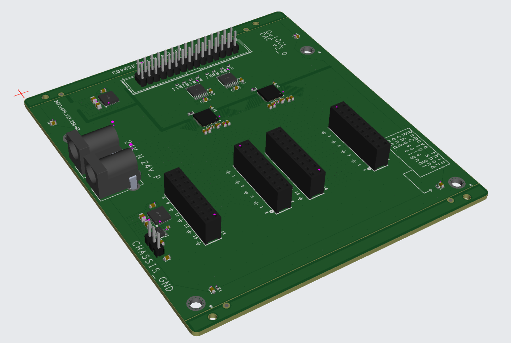
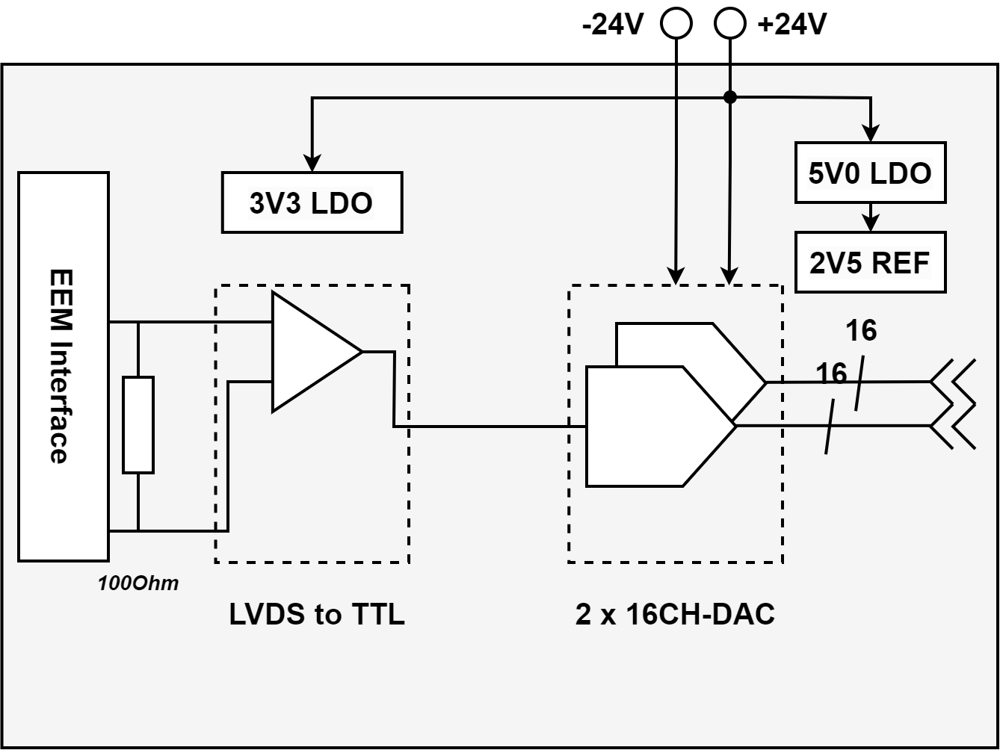
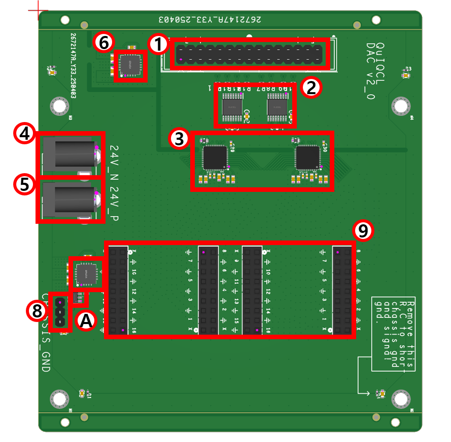
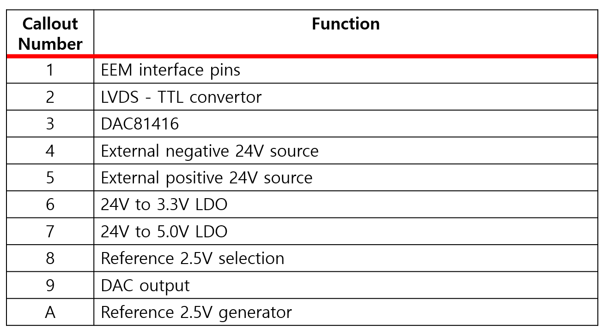
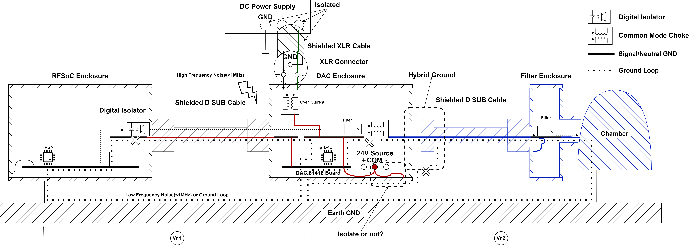
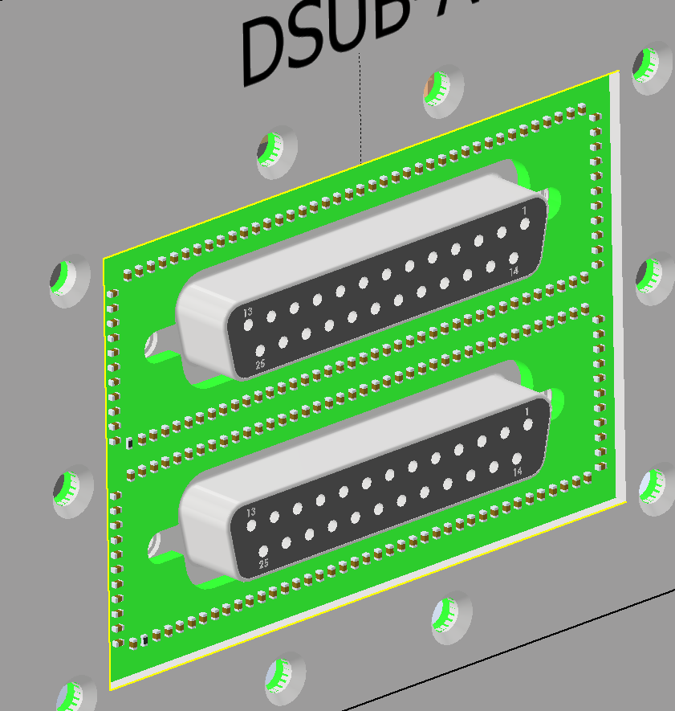
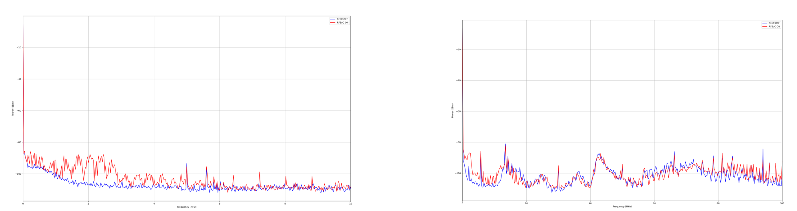

Low Noise DAC System
Overview
In TIQC, ions are shuttled to implement QCCD architecture. Shuttling is implemented by DAC, and to improve fidelity decrease from DAC, it should be designed to be low noise. To remove low, and high frequency noise, DAC system is fully shielded and ground loop is removed.
Board Configuration
 Overall System
Remove ground loop, and shield DAC from high freuqnecy noise and ESD.
Remove ground loop, and shield DAC from high freuqnecy noise and ESD.
Test Results
Signal Integrity

Remove ground loop, and shield DAC from high freuqnecy noise and ESD.
Output Noise
The blue trace represents the DAC's intrinsic noise floor, whereas the red trace shows the spectrum when the DAC is connected to the external digital board. The additional noise introduced by the digital board can be suppressed by inserting the isolation board.